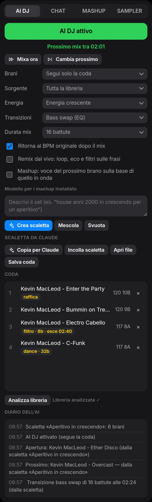

Scalette con Claude
Il set lo decidi tu.
Lo mixa Segueo.
Scegli con Claude i brani, l'ordine e quando cambiare stile. Segueo carica la scaletta in un clic e mixa tutto il DJ set da solo, a tempo, dal primo all'ultimo brano.
Come si fa
Quattro passi.
Cinque minuti.
Tutto parte dalla scheda AI DJ, nella sezione Scaletta da Claude. Serve solo un account su claude.ai, anche quello gratuito.
-
01
Copia la libreria
Premi Copia per Claude. Negli appunti c'è la richiesta per Claude con l'elenco dei tuoi brani: BPM, tonalità, energia, genere e durata.
-
02
Parla con Claude
Apri claude.ai, incolla e racconta la serata: locale, pubblico, durata, generi, quando far salire l'energia. Claude risponde con la scaletta.
-
03
Incolla la scaletta
Copia la risposta di Claude e premi Incolla scaletta. Oppure salvala come file
.jsone caricala con Apri file. -
04
Avvia l'AI DJ
I brani sono in coda nell'ordine deciso. Premi Avvia AI DJ: Segueo mixa il set e cambia stile proprio dove l'hai chiesto.

Vedi subito cosa succederà.
Accanto a ogni brano in coda compaiono le indicazioni della scaletta: lo stile della transizione, le battute del mix, il punto di entrata e quello di uscita. Nel diario dell'AI ogni scelta dice da dove viene.
- I brani si trovano anche se Claude li scrive in modo un po' diverso: maiuscole, accenti, "(Radio Edit)"
- Quelli che non sono nella libreria vengono saltati e elencati nel diario
- Durante il set puoi sempre intervenire: Mixa ora, Cambia prossimo, SegueoChat
- Salva coda la trasforma in un file da riusare o da far ritoccare a Claude
Cosa chiedere
Racconta la serata.
Come a un DJ vero.
Dopo aver incollato il testo di Copia per Claude, scrivi cosa ti serve. Più dettagli dai, più il set ti somiglia. Qualche esempio:
Aperitivo di due ore in un locale all'aperto. Si parte tranquilli con deep house, dopo un'ora si sale con brani più energici. Transizioni lunghe e morbide all'inizio, poi bass swap da 16 battute.
Festa di 18 anni, 90 minuti. Commerciale e reggaeton, energia sempre alta. Negli ultimi 20 minuti tagli a raffica sul battere, e chiudi con il brano più famoso che ho.
Set techno di un'ora e mezza. Apri con mix lunghi in stile techno da 32 battute, a metà set picco di energia con il modello dance e cambi da 8 battute, poi scendi piano per chiudere.
Consiglio: prima di premere Copia per Claude fai Analizza libreria. Così Claude conosce BPM, tonalità ed energia di ogni brano e mette vicini quelli che stanno bene insieme.
Per chi vuole i dettagli
Il formato della scaletta.
Claude lo conosce già: è scritto nel testo di Copia per Claude. Se preferisci, puoi anche scriverlo a mano o modificarlo. È un file di testo JSON.
{
"scaletta": "Aperitivo in crescendo",
"dopo": "fine",
"impostazioni": { "transizioni": "bass swap", "battute": 16, "energia": "crescente" },
"brani": [
{ "artista": "Kevin MacLeod", "titolo": "Ether Disco", "entrata": "0:16" },
{ "artista": "Kevin MacLeod", "titolo": "Overcast", "nota": "si entra nel vivo" },
{ "artista": "Kevin MacLeod", "titolo": "Enter the Party", "transizioni": "raffica" },
{ "artista": "Kevin MacLeod", "titolo": "Bummin on Tremelo" },
{ "artista": "Kevin MacLeod", "titolo": "Electro Cabello", "transizioni": "filtro", "battute": 8, "uscita": "2:40" },
{ "artista": "Kevin MacLeod", "titolo": "C-Funk", "transizioni": "dance", "battute": 32 }
]
}Il segreto è uno solo.
Le impostazioni scritte su un brano valgono per la transizione che lo fa entrare e restano per i brani dopo, finché un altro brano non le cambia. Così decidi quando cambia lo stile del set.
brani- I brani in ordine. Artista e titolo come nella libreria, oppure
"file"con il nome del file. transizioni- automatica, bass swap, filtro, echo, dissolvenza, taglio, raffica, dance (modello AI), techno (modello AI, mix lunghi).
battute- Durata del mix, da 4 a 64. Di solito 8, 16 o 32.
entrata- Da che punto parte il brano, in minuti:secondi. Facoltativo.
uscita- Quando inizia il mix verso il brano dopo. Facoltativo: senza, Segueo sceglie l'inizio di una frase.
energia- costante, crescente, onde, rilassata, picco. Serve quando, finita la scaletta, sceglie l'AI.
remix,mashuptrueofalse: remix dal vivo sulle frasi, voce del brano dopo sulla base di questo.nota- Un promemoria che compare nel diario quando il brano va in onda.
dopo"fine"chiude il set con l'ultimo brano,"continua"lascia poi scegliere all'AI DJ.
Domande frequenti.
Claude ascolta la mia musica?
No. Claude riceve solo il testo che incolli: artista, titolo, BPM, tonalità, energia, genere e durata dei brani. I file audio restano sul tuo computer, e Segueo non invia niente su internet da solo.
La risposta di Claude ha anche delle frasi oltre alla scaletta. Va bene?
Sì. Copia pure tutta la risposta: Incolla scaletta trova da solo il blocco JSON, anche dentro un riquadro di codice.
Alcuni brani non vengono trovati.
Segueo li salta, avvisa con un messaggio e li elenca nel diario dell'AI. Di solito succede quando Claude inventa un brano o ne scrive male il titolo: chiedigli di usare solo i brani dell'elenco, scritti esattamente così.
Ho una libreria enorme. Funziona lo stesso?
Sì, ma un elenco di migliaia di brani è lungo da incollare. Puoi creare una playlist con i brani adatti alla serata, sceglierla come Sorgente e lavorare solo su quella, oppure chiedere a Claude di concentrarsi su certi generi.
Posso modificare una scaletta già pronta?
Certo. Premi Salva coda, apri il file con un editor di testo o incollalo a Claude chiedendo cosa cambiare, poi ricaricalo con Apri file o Incolla scaletta.
Funziona anche con altri assistenti AI?
Il formato è un normale JSON: qualunque assistente che sappia seguire le istruzioni del testo di Copia per Claude può scriverlo. Abbiamo provato con Claude.